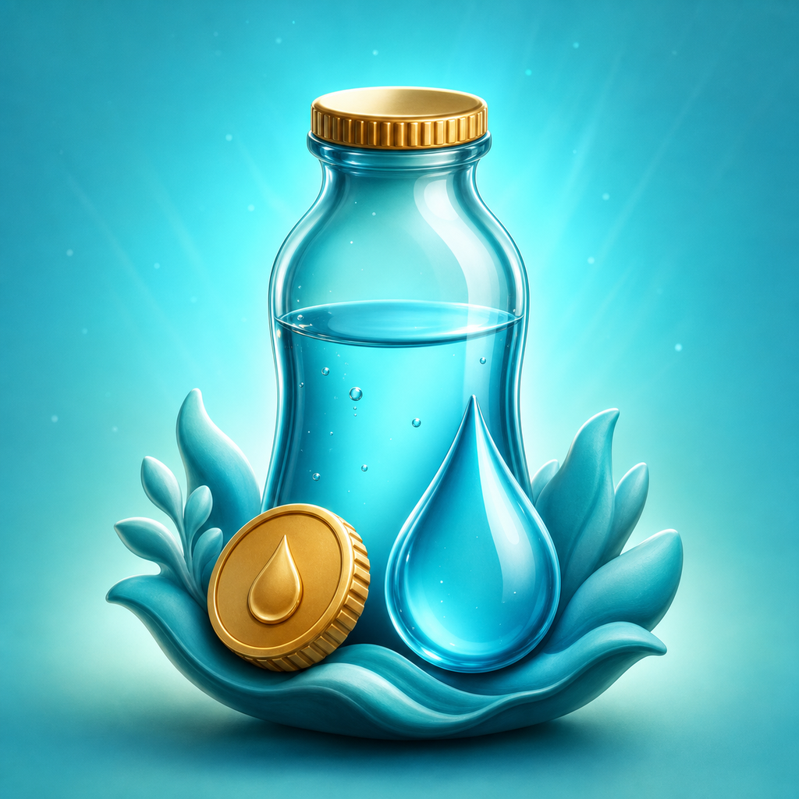
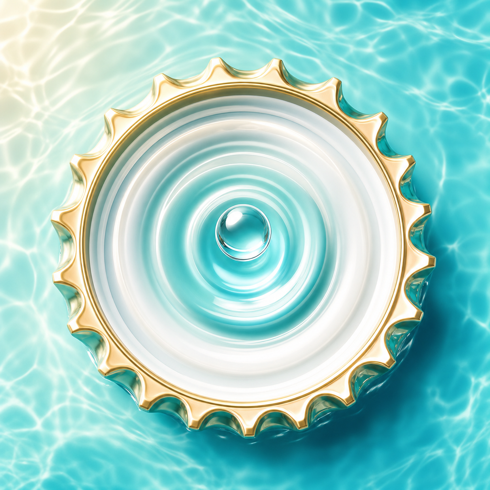
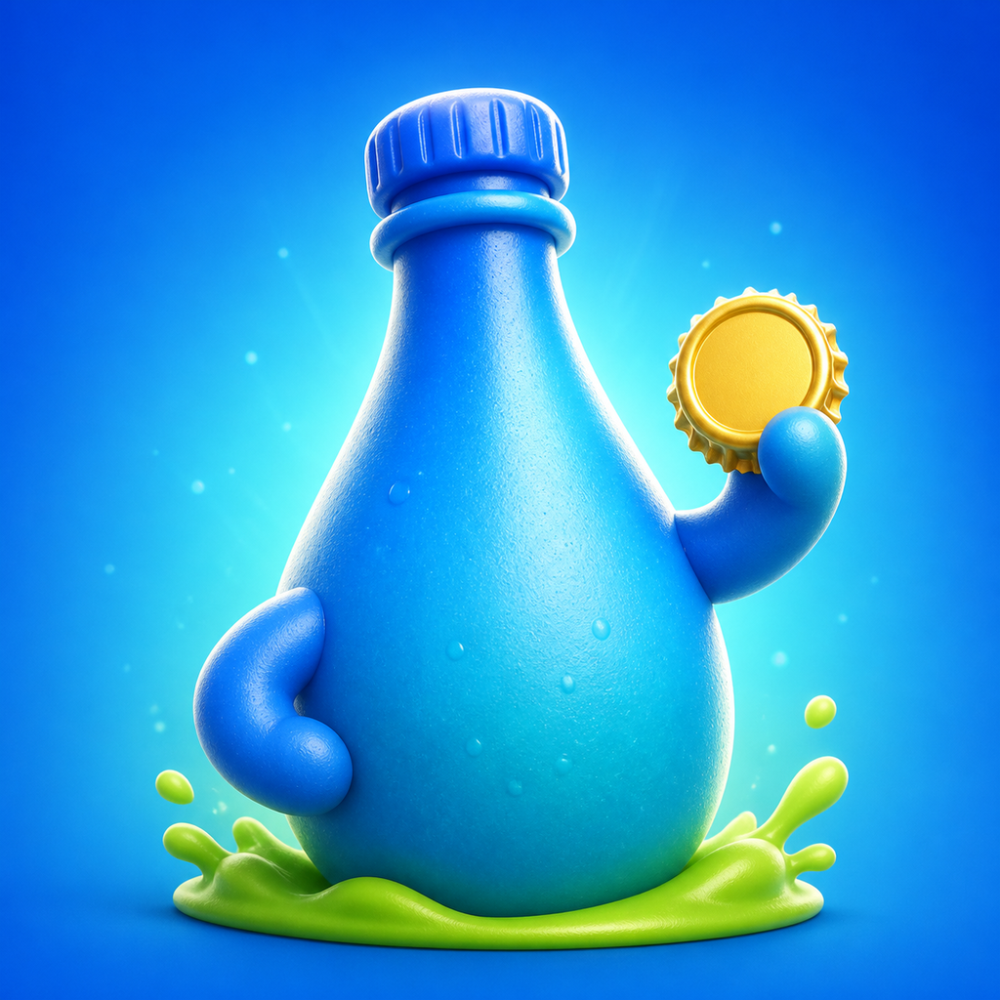
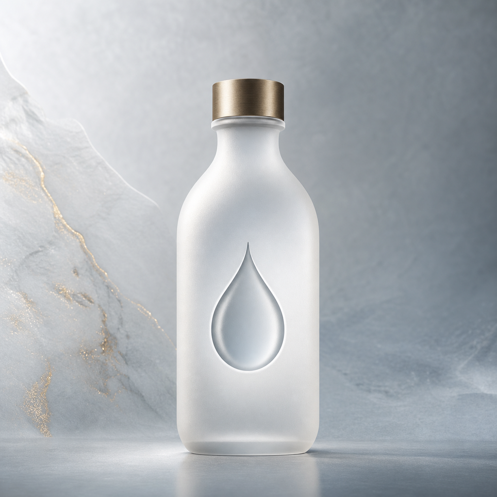
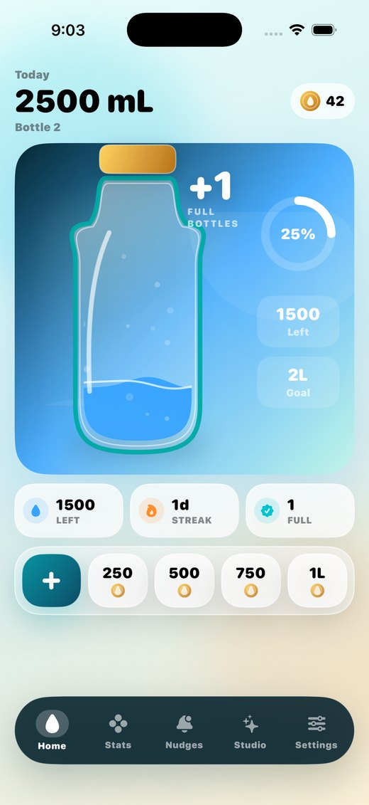
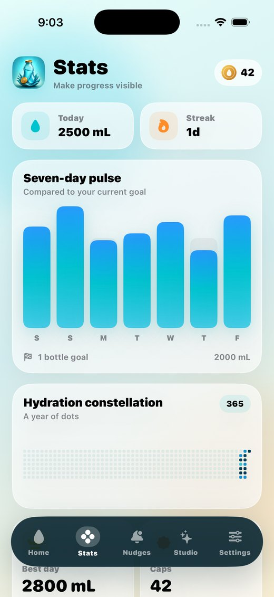
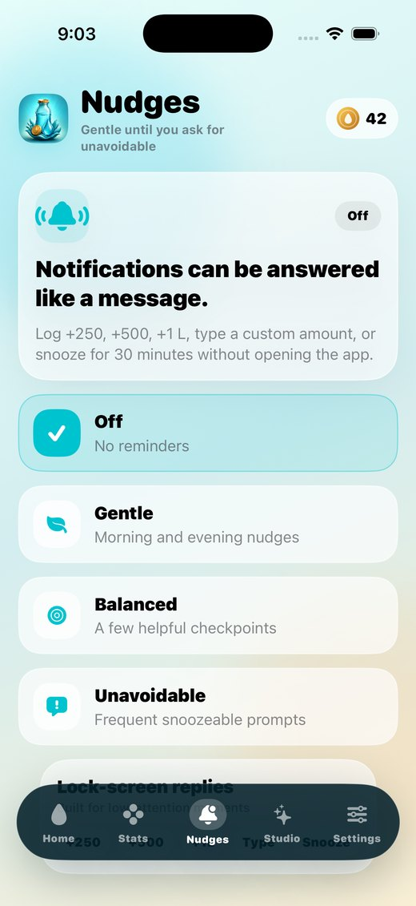

Animated bottle
Progress is shown as water, not just a number. Completed bottles stay visible as daily momentum.

CapdropiOS water tracker
Capdrop is a local-first water tracker made for visual people: one tap, a filling bottle, useful reminders, widgets, and a reward loop that stays out of the way.
What it is
Capdrop keeps the important parts on one screen: today's amount, the current bottle fill, quick log buttons, caps earned, and a visible streak. It avoids accounts, feeds, and dashboard noise.
Core loop
Progress is shown as water, not just a number. Completed bottles stay visible as daily momentum.
Each 500 mL earns a bottle cap, giving the habit a small collectible reward without adding complexity.
Small, medium, large, and Lock Screen widgets show progress and let common amounts be logged quickly.
Weekly bars, streaks, best days, and a contribution-style map keep history visual and readable.
Use cases
Log common amounts without scrolling or choosing from a long list.
Respond to reminders with preset amounts or snooze when now is not the time.
Put progress where you already look and avoid the friction of app switching.
Visual identity
Capdrop includes selectable app icons so the home screen can feel like a personal object instead of another utility square.






Launch readiness
FAQ
No. It is designed to work locally on the device.
No backend is used by the native app. Export creates a local JSON file only when requested.
No. Widgets use lightweight snapshots to respect iOS battery and WidgetKit limits.
Capdrop is ready to connect to the final App Store listing, support channel, and privacy URL.
View project